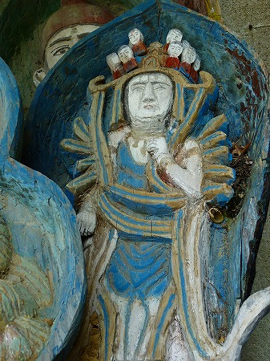

福岡県苅田町。
瀬戸内海の西端、豊前海に面した町である。
苅田港の周辺には日産、トヨタ、日立、三菱などの大工場が立ち並ぶ
九州屈指の工業都市だ。
一方、巨大工場が立ち並ぶ苅田港から内陸に目をやると石灰岩質の台地が西へと広がっている。
そんな石灰岩の岩山にぽっかり穴が開いている。そこに大仏がおわすというのだ。
通称
内尾薬師、正式には相円寺という。
湖の畔にある岩山の中腹に穴が見える。うむ、あれか。いざ行かん！
…と思ったのだが、ココに至るまでのロケーションがあまりにも面白かったので先にそっちのハナシをさせて貰います。
本題とはまるで関係ないので恐縮だが、かなり
特異な場所なもんで。
この内尾薬師がある周辺の山では石灰岩の採掘があちこちで行われている。
で、その石灰を港の方まで運び出す
巨大で長大なベルトコンベアが野を越え山越え谷越えまくってているのだ。
そもそも苅田町を含めたこの一帯が工業都市帯として発展したのもこの石灰の採掘がベースになっている。
いわば苅田の近代化の象徴とでもいうべき風景だ。
時には道をまたぎ
港の近くにあるセメント工場まで石灰石を運び出している。
下界には工場群が見える。その先は瀬戸内海の最西端に位置する豊前海。
余談ついでにこの寺の目の前に広がる湖の事も付け加えさせちゃってください。
この湖、実はダムによってせき止められた湖なのだ。
ダムの先には内尾薬師しかないため、ダムの堤頂部がそのままお寺専用の参道になっている。
言い方を変えれば、
参道がダムで出来ているお寺、ということになる。
もっともダムとはいえ土で出来たダムなので、見ようによっては桜並木の美しい巨大な土手にしか見えないのだが。
洪水吐に架かる小さな橋を越えると湖沿いに参道が続く。
その参道沿いには
小さなコンクリの祠が並んでいた。
恐らく四国八十八か所の写し本尊だと思う。祠の中にはしっかり
ペンキ塗りされた石仏が。
祠の形状や仏像の色合いもまちまちなので、各祠はそれぞれ個人が管理している、と考えられる。
中にはタイル貼りの立派な祠も。
こっ、これは十一面観音ですか？だんご三兄弟みたいになっちゃってます
けど…
そうこうするうちに平坦な参道も終わりいきなり急峻な山道となる。
それでも派手にペイントされた石仏が絶えることはない。
しばらく山道を登ると、洞窟があり、多くの石仏が奉納されていた。
竜窟、通称
針の耳戸というのだそうな。
龍神、水神が奉られているようだ。
何故か
巨大なマサカリが奉納されていた。

さらに険しい階段を上ると
薬師堂にたどり着いた。
大きな洞穴にすっぽり納まるようなお堂である。
近年建て替えられたようだ。
残念ながら
行基作といわれる像高3メートルの薬師如来像は外からは
よく見えなかったです…。
お寺の看板の写真によるとこんな薬師サマだったようで。折角昇ってきたのに慙愧に堪えませぬ。
というわけでまた急な階段を下りていくわけです。行きに比べて帰りの足の
重いこと重いこと。
残念無念の内尾薬師訪問であった。
…と、コレで終わりかいっ！とお嘆きの貴兄。
これでオシマイなわけないじゃないですか〜、旦那。
ココからが本題です。
いつにも増して前説が長くてスミマセンねえ。
先ほどの殿川ダムの洪水吐にかかる小さな橋のところにスレート屋根の架かった小さな棚があった。
そこからは
素通り厳禁オーラが発せられれていて、思わず立ち止まってしまった。

こ、これは…
そう、こちらが
本日のメインディッシュの
インディーズ仏像群なのである。
如何であろう、この
ちびまるこちゃんっぽい仏像。
色といい、フォルムといい、何ともキュートではないか。
このような素敵すぎる仏像が100体ほど密集しているのだから堪らない。興奮のあまりむせび泣き。
作風からして作者は恐らくひとり。
決して上手くはないが
独特すぎるテイストをギンギンにかもし出している。
ムカデみたいな千手観音。
足が異様に細いぞ。

衣の処理、頭上のミニ観音、見ているだけでニンマリしてしまう。
目が猫っぽくて恐いす。
これは…文殊菩薩なのか？
彫像のほとんどは舟形の光背を背負っているタイプ。
実はコレだと背中の部分を彫らないレリーフ状態なので立体感をあまり出さずに済み、より簡単に作れるのだ。
嗚呼、なんてスバラシい仏像群なんだろう。
この時点で行基作の薬師如来とか
もうそんなのどうでもいいです状態。
いやむしろこのポンチ仏の方が俄然面白いて。
仏像の中には○○番と書かれているものもちらほら。
例えば↑こちらの中央の光背には四××十七番と書かれている。
うむ〜、どこかで見たような。
そうか！四国三十七番の五智院の五本尊の事か！
…ということはココにある仏像群は全て
四国八十八カ所の写し本尊なのか！
四国八十八カ所の本尊といえば相当な種類の仏像を手がけることになる。
ハッキリ言ってさして上手でもないこの作者がなぜこのような無謀ともいえる難しい課題を自らに課したのだろう？
ここからはワタクシお得意の
作品から作者の内面を勝手に（しかも若干盛り気味に）想像するの術を駆使させていただく。
ほとんど彫刻の経験のない（であろう）お方が一念発起して四国八十八カ所の本尊を作って内尾薬師の参道に奉納しよう、と考えたとしよう。
ここで分かれる2タイプ。
1；一通り彫刻のスキルを積んで完成度の高い仏像を奉納するタイプ
2；とにかく今すぐ作って奉納するんじゃあ！我慢できんけん！的タイプ
…もちろんこの仏像の作者は後者、いわゆる
買ったプラモはその日のうちに完成させないと気が済まないタイプとお見受けした。
でもそれは決して悪いこととは思えない。
鉄は熱いうちに打て、じゃあないけど、この仏像群からは
パッションが目茶苦茶高まっているのが伝わってくるではないか。
例えばこの十一面観音。
どうですか。
ヘタといえばそれまでだが、彫像なのに妙なスピード感というか疾走感がありませぬか？
悪そのスピード感からは
仏様が大好き過ぎてどうにも衝動を抑えきれない熱いパッションがビシビシ感じられるのだ。
もう頭上のミニ観音なんて彫るの面倒くさいからマジックで描いちゃってますもん。
技術的に稚拙なれど、志だけは名仏師、なのだ。
でもそれは大事なことだと思うよ。
やれ資格だ、スキルだと外堀と理屈を固めなきゃ前に進めない連中だらけの昨今、思い込みと情熱だけで事を成し遂げようとする
猪突猛進型方法論がたまにはあったっていいじゃない。
ヘタであろうが、
見るものの心を打つ何かが内包されている素晴らしい仏像群である、と太鼓判を押したい。
中には龍神なのだろうか、女神の姿も。そういえばさっきの洞窟も龍神、水神信仰だったなあ。
こうした神仏の彫像が並ぶ中、ひとつだけ紋付を着た人物の彫像があった。
着色もされていないところを見ると作りかけなのだろう。
とりあえずこの素敵過ぎる仏像群の作者、かもしれないし、ひょっとしたら遺作かもしれない（違ってたら失礼！）ので特に念入りに拝んでおきましたよ。